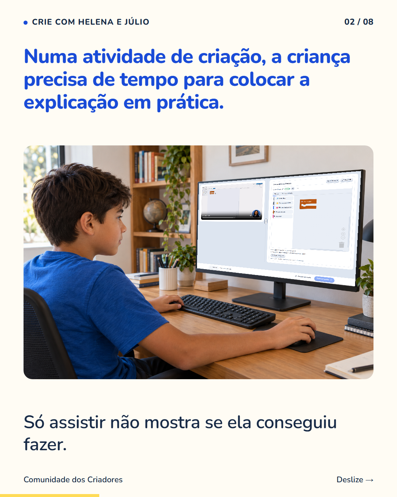
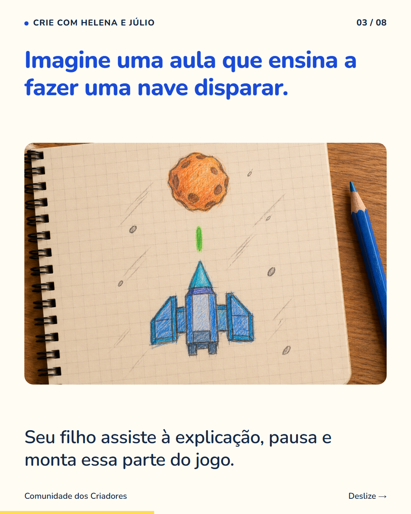
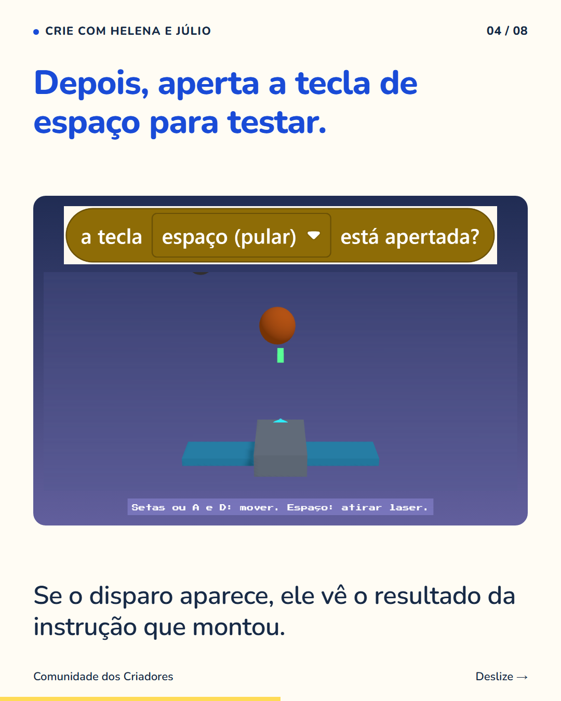
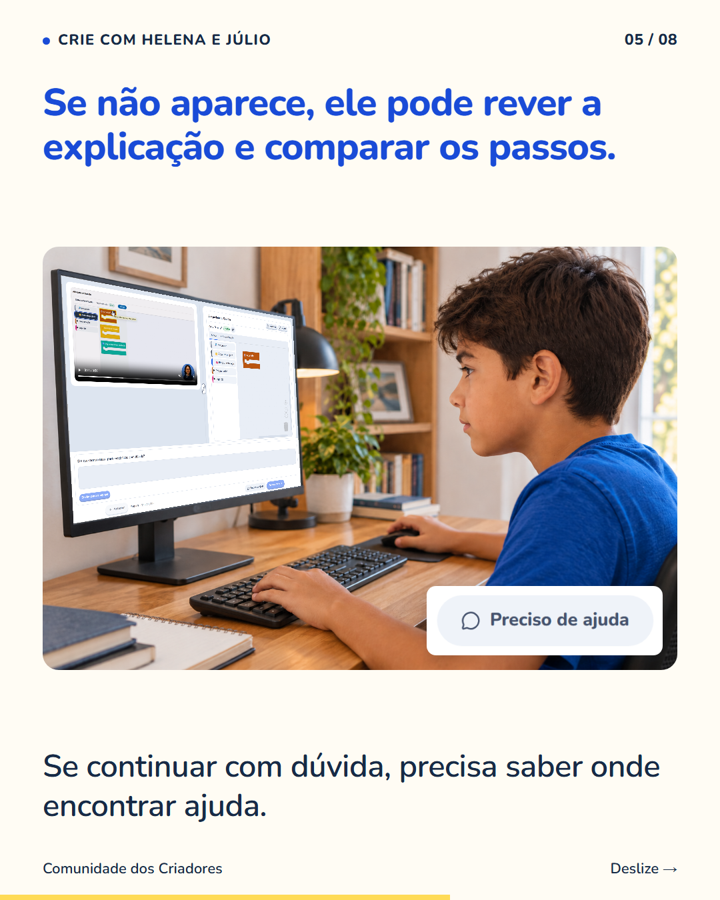
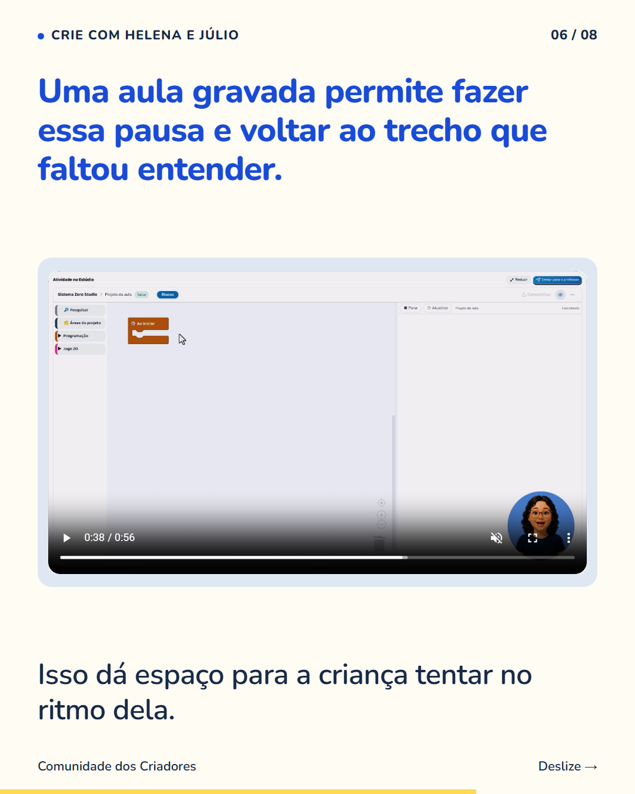
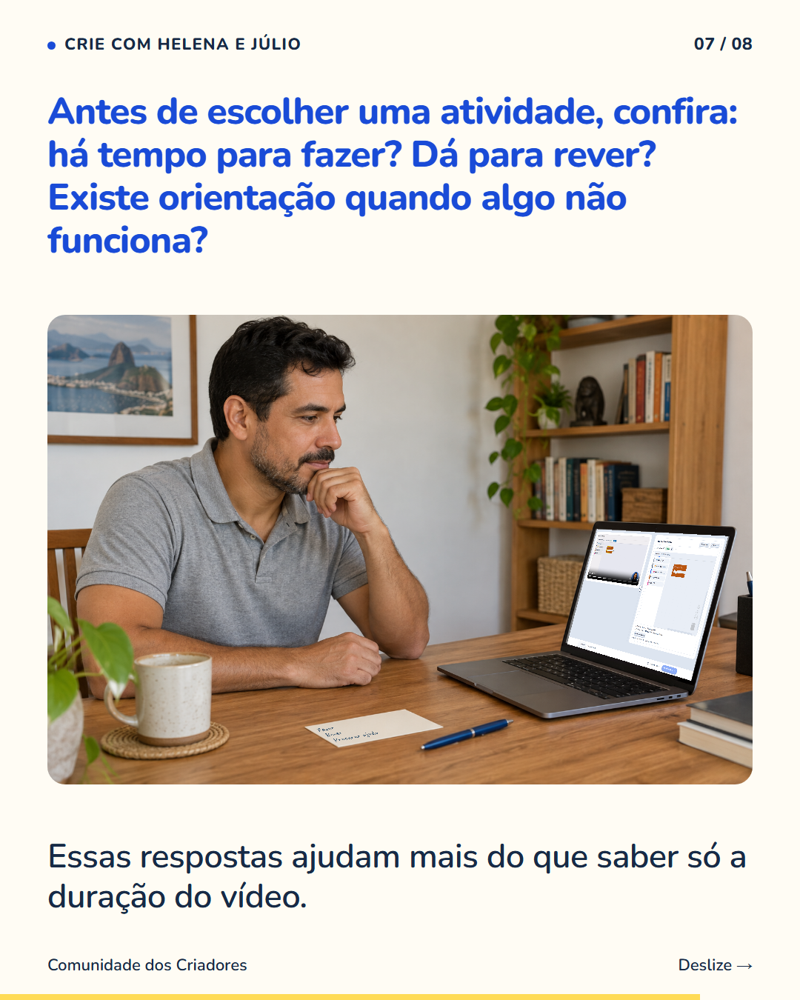
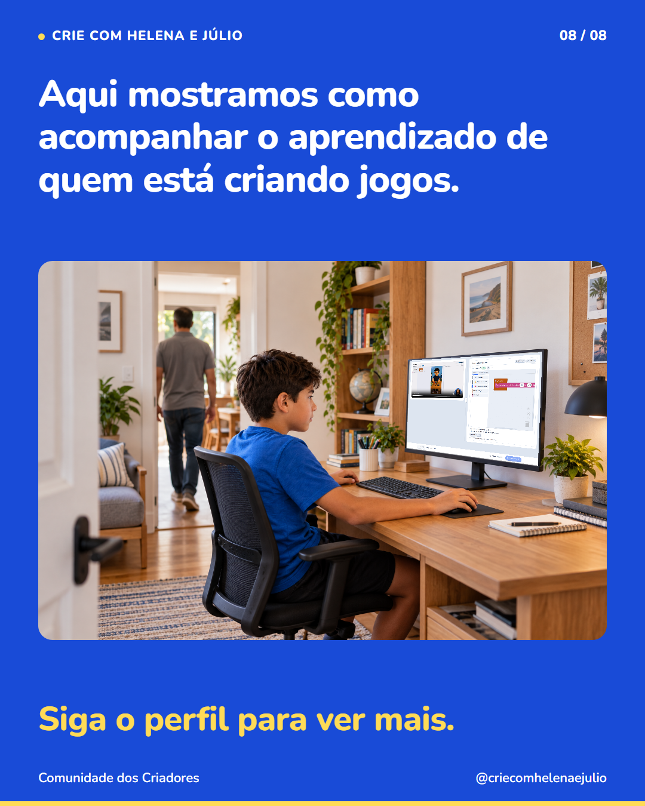

8 slides · 1080 × 1350 · Copy revisada · Pausar, montar, testar e encontrar ajuda







O vídeo está parado e seu filho está mexendo no projeto. Essa pausa pode ter um bom motivo. Ao criar um jogo, ele alterna entre assistir, montar e testar. Às vezes, volta alguns segundos porque não encontrou o comando. Em outras, pausa para ver o resultado do que acabou de fazer. Vale perguntar: ‘Qual parte você está tentando fazer agora?’ A resposta ajuda a entender se ele está praticando ou se precisa de orientação. Se estiver preso numa dúvida, acompanhe a busca pela explicação ou pelo recurso de ajuda da atividade. Siga o perfil para conhecer mais formas de participar do aprendizado do seu filho.